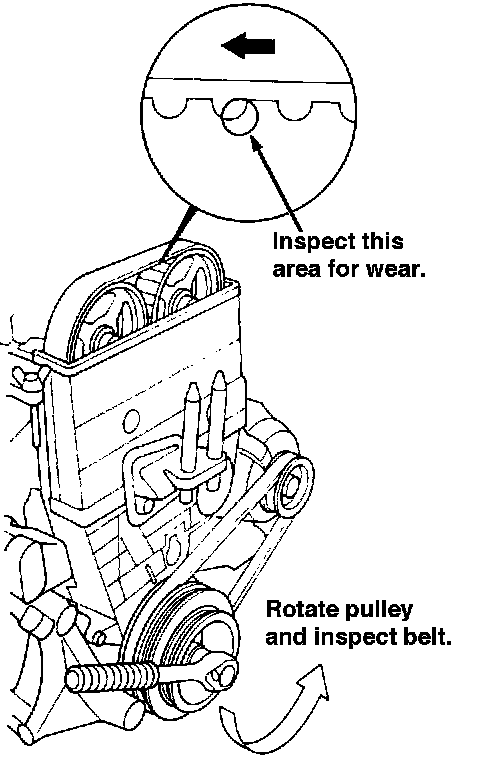

Timing Belt: Testing and Inspection

Inspection
1. Remove the cylinder head cover.
2. Inspect the timing belt for cracks and engine coolant or oil soaking.
NOTE:
- Replace the belt if oil soaked.
- Remove any oil or solvent that gets on the belt.
4. After inspecting, retorque the crankshaft pulley bolt to 177 N.m (18.0 kgf.m, 130 lbf.ft).